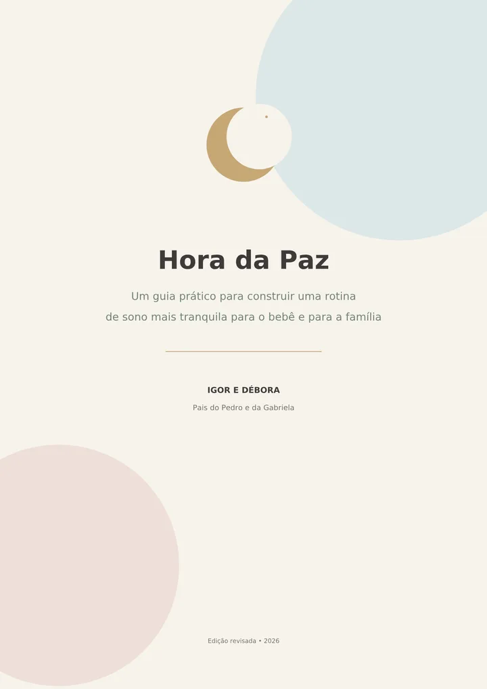
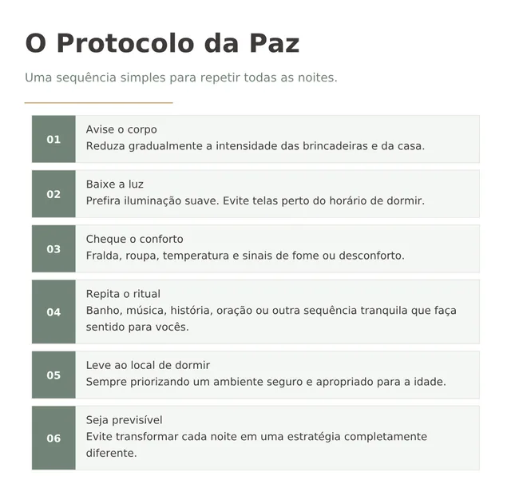
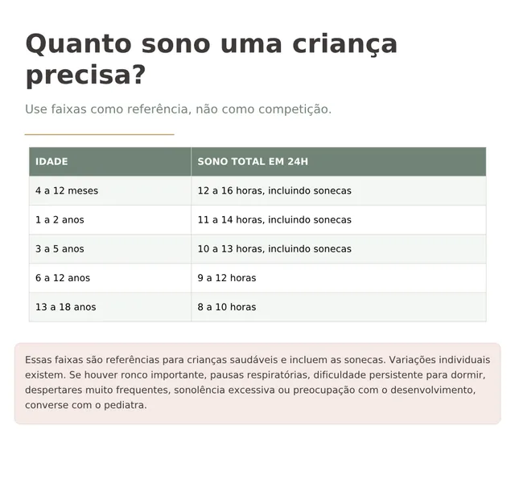
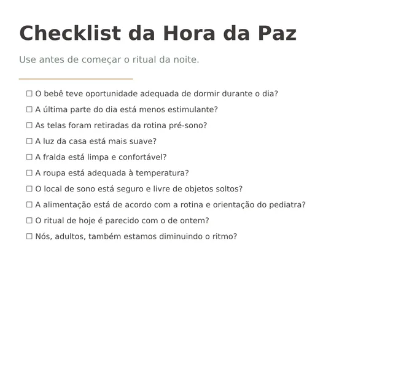
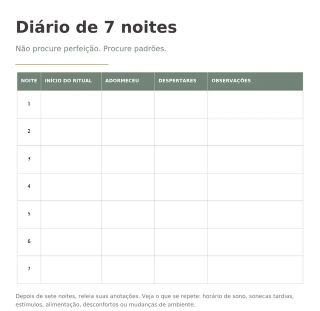

Entenda o ritmo do seu bebê
Aprenda a observar sonecas, despertares e sinais antes de tentar mudar a rotina.
Aprenda a construir uma rotina de sono mais previsível para seu bebê e devolver tranquilidade às noites da sua família.
eBook completo • acesso imediato
R$ 29,90 • pagamento único • garantia de 7 dias

Talvez o problema não seja falta de esforço.
Talvez esteja faltando previsibilidade.
Isso acontece em muitas casas. E não diz nada sobre o pai ou a mãe que você é.
Um bebê não nasce sabendo o que é dia, noite ou hora de dormir. Ele aprende aos poucos, pelo que se repete ao redor dele: a luz que diminui, a casa que fica mais calma, a mesma sequência todas as noites. É isso que a Hora da Paz ajuda você a organizar.
Um ritmo diário que faça sentido para a família.
Sinais repetidos que ajudam o bebê a reconhecer o que vem depois.
Menos luz, menos barulho e menos estímulo perto do sono.
Roupa, temperatura, fralda e ambiente adequados.
Repetir com calma, ajustando quando necessário.
A Hora da Paz não começa quando o bebê fecha os olhos.
Começa quando a casa desacelera.
A Gabriela foi muito desejada. Ainda durante a gravidez, começamos a pensar em como a rotina da nossa casa ia mudar.
Percebemos que, se queríamos ensinar uma rotina para nossa filha, precisávamos primeiro construir essa rotina em nós mesmos. Então começamos pela casa, ainda na gestação:
Depois que a Gabriela nasceu, percebemos algo:
“Quando a casa desacelerava, a Gabriela também ficava mais tranquila.”
Não eram noites perfeitas. Era um caminho que ela começava a reconhecer, e que nós também aprendíamos a oferecer. Foi dessa experiência que nasceu a Hora da Paz.
Somos pais, não médicos, pediatras nem especialistas em sono infantil. O guia conta o que funcionou para a nossa família e reúne cuidados básicos de sono seguro, com base em materiais públicos da Sociedade Brasileira de Pediatria e do Ministério da Saúde.
Do primeiro olhar sobre o ritmo do seu bebê até os primeiros dias de rotina, tudo em uma sequência simples de seguir.
Aprenda a observar sonecas, despertares e sinais antes de tentar mudar a rotina.
Orientações básicas de sono seguro para bebês menores de 1 ano, antes de qualquer rotina ou ritual.
Luz, estímulos, roupas, temperatura e pequenos detalhes que podem interferir na noite.
Uma sequência simples para mostrar ao bebê que a noite está chegando.
Como observar necessidades básicas sem transformar a madrugada em hora de brincar.
Uma forma simples de começar, observar e ajustar, sem tentar mudar tudo de uma vez.
Para você não depender da memória quando estiver cansado.
Para enxergar padrões que normalmente passam despercebidos.
Uma receita da nossa rotina, usada como sinal do ritual. Não induz sono e deve respeitar a idade e a orientação do pediatra.
E ainda: como começar a mudança pela rotina da sua própria casa, referência de sono por idade, o exemplo real da rotina da Gabriela, erros que costumam atrapalhar, constância sem rigidez, o que esperar durante a adaptação, quando procurar o pediatra e um resumo do método em uma página.
Uma sequência simples, sempre na mesma ordem, para repetir todas as noites. O guia explica cada etapa com calma. Aqui está o resumo.
A casa começa a desacelerar.
Iluminação mais suave, longe das telas.
Fralda, roupa e temperatura.
Uma sequência calma, que vira sinal.
Com segurança e atenção à idade.
Sem inventar uma noite nova todos os dias.
Páginas reais do eBook: capa, protocolo, referência de sono por idade, checklist e diário.




Ele ensina princípios para você adaptar à realidade da sua casa.
Imagine chegar ao fim do dia e seu bebê começar a reconhecer os sinais de que a noite está chegando.
A casa diminuindo o ritmo.
As luzes ficando mais baixas.
O ritual começando.
E aquele momento deixando de parecer improvisado todas as noites.
Essa é a proposta da Hora da Paz.
Cada bebê é diferente, e cada noite também. O guia não promete resultado: oferece um caminho para começar.
Edição revisada 2026 • 24 páginas
Pagamento único, sem mensalidade.
Cartão em até 4x (com acréscimo), Pix, boleto ou PayPal.
Pagamento seguro pela Hotmart • acesso por e‑mail após a confirmação • garantia de 7 dias
Leia com calma e decida com tranquilidade. Se dentro de 7 dias após a compra você concluir que o guia não é para você, pode pedir o reembolso do valor pago. O pedido é feito diretamente pela Hotmart.
Não. É um guia digital em formato de eBook: um material para ler, consultar e aplicar no seu ritmo, do jeito que fizer sentido para a sua rotina.
Não. O acesso é 100% digital. Você pode ler no celular, no tablet ou no computador.
Assim que o pagamento é confirmado, a Hotmart envia o acesso para o e-mail informado na compra. No cartão e no Pix, a confirmação costuma ser rápida. No boleto, é preciso aguardar a compensação bancária.
Pelo e-mail de confirmação da compra. Se preferir, também é possível acessar pela sua conta na Hotmart:
O guia trata de princípios de rotina, previsibilidade, ambiente e conforto, pensados para bebês e crianças pequenas. Mas as necessidades de sono, alimentação e segurança mudam conforme a idade. Por isso o guia traz uma referência de horas de sono por faixa etária (a partir dos 4 meses) e orientações específicas de sono seguro para bebês menores de 1 ano. Em caso de dúvida sobre o seu bebê, converse com o pediatra.
Não. Os horários dela são apenas um exemplo real, não uma prescrição. O principal é a lógica: rotina e previsibilidade. Cada família adapta à sua realidade.
Não. Ele organiza hábitos, não faz diagnóstico nem tratamento. Alimentação, mamadas e desmame devem ser sempre definidos com o pediatra, de forma individual. O guia também mostra quando procurar orientação médica.
Não prometemos isso. Cada criança é diferente, e fases, doenças e mudanças de rotina alteram o sono. O objetivo do guia é ajudar você a construir uma rotina mais previsível, que sirva de base para onde voltar.
Não. Somos pais. O guia é o relato organizado da nossa experiência em família, somado a cuidados básicos de sono seguro com base em materiais públicos da Sociedade Brasileira de Pediatria e do Ministério da Saúde.
Você tem 7 dias após a compra para pedir o reembolso do valor pago, diretamente pela Hotmart.
Cartão de crédito (à vista ou em até 4x, com acréscimo nas parcelas), Pix, boleto e PayPal. O pagamento é processado com segurança pela Hotmart.
Comece pela casa. Escolha uma sequência possível, repita com calma e observe o que muda. Nós também começamos assim.
R$ 29,90 • eBook completo • acesso imediato • garantia de 7 dias